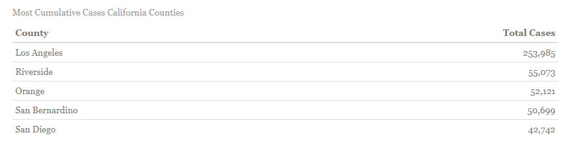
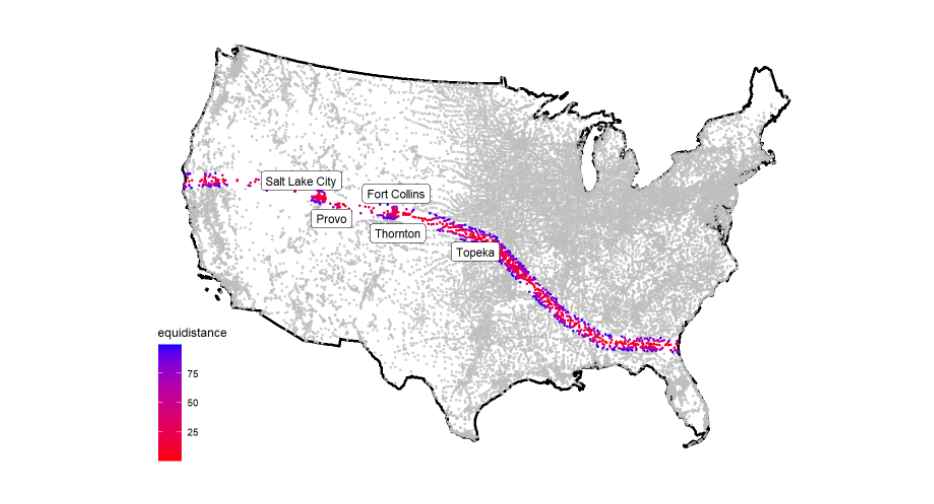
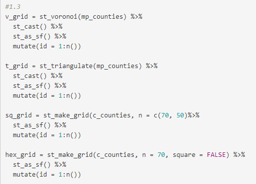
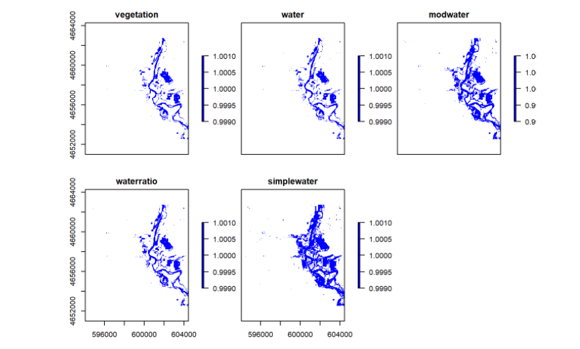
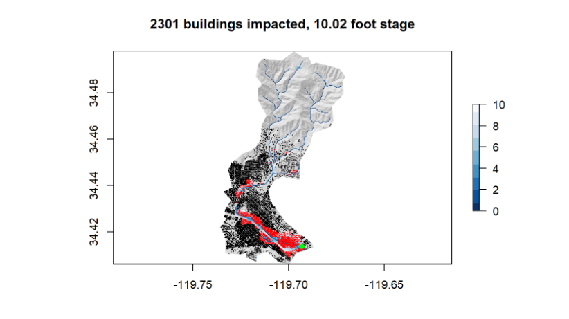

In Summer 2020 I took an -based GIS class. I wrote some code and created some cool stuff on the internet.
- Built a personal website to host the various projects completed throughout the course
- Learned to push website updates through github
- Practiced creating aesthetically pleasing web pages
- Analyzed COVID-19 data to see where in California cases were growing
- Created lists of counties that need to be watched by calculating per capita infection rates
- Practice generating tables using kable
- Created faceted bar plots to show case count changes over time in multiple states

- Learned to use simple features objects to generate object boundaries, and then manipulate them to create spatial graphs.
- Learned to manipulate coordinate reference systems to according to what is needed for a calculation
- Calculated distances between geographic objects
- Generated maps shows hwo many people and what cities are located within certain geographic boundaries
- Quantified how many people live within the 100 mile border zone throughout the United States

- Created different tessellations inside the United states including hex, voronoi, square, and triangulation
- Simplified geometries to speed up calculation times
- Learned to write functions to expedite repetitive processes such as mapping tasks
- Used point-in-polygon counts to aggregate point data and figure out what the uses of different dams are

- Practiced generating an area of interest from a CSV file by converting it into a simple features object, then creating a bounding box
- Created raster data that represented flood data and manipulated it to create a flood map
- Analyzed rasters using raster algebra to generate thresholds which could be used to find if a cell in the raster was considered to be flooded or not
- Performed a complete flood analysis using landsat imagery

- Collected basin boundaries from USGS data and elevation data from the elevatr package.
- Performed a terrain analysis using by creating a Height Above Nearest Drainage raster
- Assessed the number of buildings impacted by a 2017 flood using the HAND raster
- Learned how to create a Flood Inundation Map library and animating it as a GIF to see how floods will effect an area
